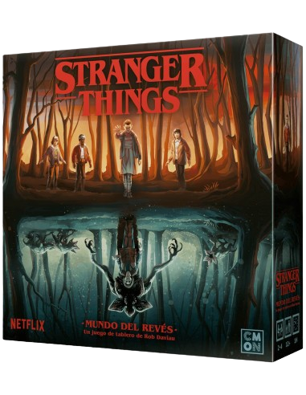

Cooperativo
Arkham Horror

En Arkham Horror, los jugadores son investigadores que deben resolver misterios y enfrentarse a monstruos en la ciudad de Arkham. Deberán colaborar para cerrar portales dimensionales y evitar que los Primigenios despierten
Precio: $27.890
Paleo
En Paleo, los jugadores son miembros de una tribu prehistórica que intenta sobrevivir a los peligros de la naturaleza. Deberán colaborar para conseguir alimentos, construir refugios y pintar cuevas, mientras evitan a los depredadores y a las inclemencias del tiempo.
Precio: $39.990
Stranger Things: Mundo del Revés
Stranger Things: Mundo del Revés es un juego cooperativo en el que los jugadores encarnan a los protagonistas de la serie e intentan detener a terroríficas fuerzas sobrenaturales y salvar a Will de los horrores del Mundo del Revés.
Precio: $45.990
$29.990